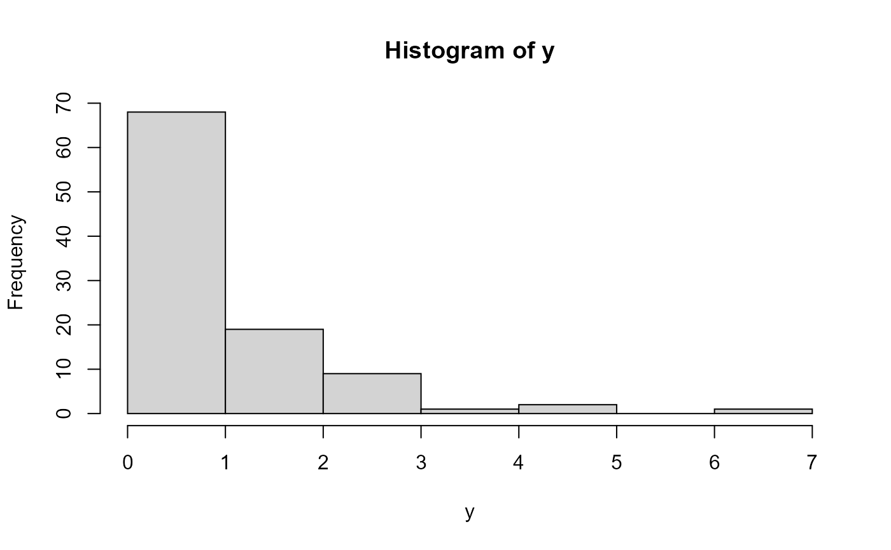

The function BP() defines the BP distribution, a two parameter
distribution, for a gamlss.family object to be used in GAMLSS fitting using using the
function gamlss(), with mean equal to the parameter mu and sigma
equal the precision parameter. The functions dBP, pBP, qBP and
rBP define the density, distribution function, quantile function and random
generation for the BP parameterization of the BP distribution.
BP(mu.link = "log", sigma.link = "log") dBP(x, mu = 1, sigma = 1, log = FALSE) pBP(q, mu = 1, sigma = 1, lower.tail = TRUE, log.p = FALSE) rBP(n = 1, mu = 1, sigma = 1) qBP(p, mu = 1, sigma = 1, lower.tail = TRUE, log.p = FALSE)
Arguments
| mu.link | object for which the extraction of model residuals is meaningful. |
|---|---|
| sigma.link | type of residual to be used. |
| x, q | vector of quantiles. |
| mu | vector of scale parameter values. |
| sigma | vector of shape parameter values. |
| log | logical; if TRUE, quantiles are given as log. |
| lower.tail | logical; if TRUE (default), probabilities are P[X <= x], otherwise, P[X > x]. |
| log.p | log.p logical; if TRUE, probabilities p are given as log(p). |
| n | number of observations. If |
| p | vector of probabilities. |
Value
returns a gamlss.family object which can be used to fit a BP distribution in the gamlss() function.
Note
For the function BP(), mu is the mean and sigma is the precision parameter of the BP distribution.
References
Rigby, R.A., Stasinopoulos, D.M., Heller, G.Z., and De Bastiani, F. Distributions for modeling location, scale, and shape: Using GAMLSS in R, London: Chapman and Hall/CRC, 2019.
Stasinopoulos D.M., Rigby R.A., Heller G., Voudouris V., and De Bastiani F. Flexible Regression and Smoothing: Using GAMLSS in R, London: Chapman and Hall/CRC, 2017
Bourguignon, M., Santos-Neto, M. and Castro, M. A new regression model for positive random variables with skewed and long tail. METRON, v. 79, p. 33--55, 2021. http://dx.doi.org/10.1007/s40300-021-00203-y
Author
Manoel Santos-Neto manoel.ferreira at professor.ufcg.edu.br
Examples
#> GAMLSS-RS iteration 1: Global Deviance = 186.7831 #> GAMLSS-RS iteration 2: Global Deviance = 186.7192 #> GAMLSS-RS iteration 3: Global Deviance = 186.6941 #> GAMLSS-RS iteration 4: Global Deviance = 186.6846 #> GAMLSS-RS iteration 5: Global Deviance = 186.6811 #> GAMLSS-RS iteration 6: Global Deviance = 186.6798 #> GAMLSS-RS iteration 7: Global Deviance = 186.6794#> #> Family: c("BP", "Beta Prime") #> Fitting method: RS() #> #> Call: gamlss::gamlss(formula = y ~ 1, family = BP) #> #> Mu Coefficients: #> (Intercept) #> 0.007589 #> Sigma Coefficients: #> (Intercept) #> 0.1569 #> #> Degrees of Freedom for the fit: 2 Residual Deg. of Freedom 98 #> Global Deviance: 186.679 #> AIC: 190.679 #> SBC: 195.89